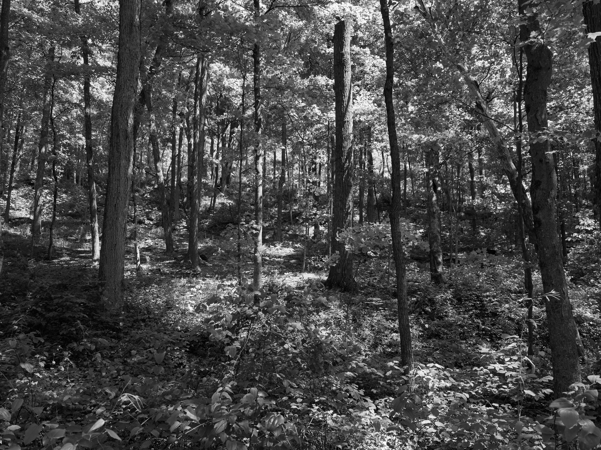
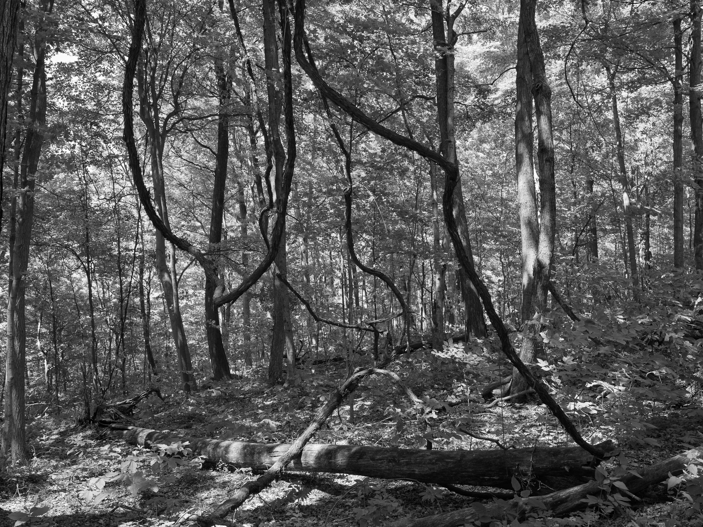
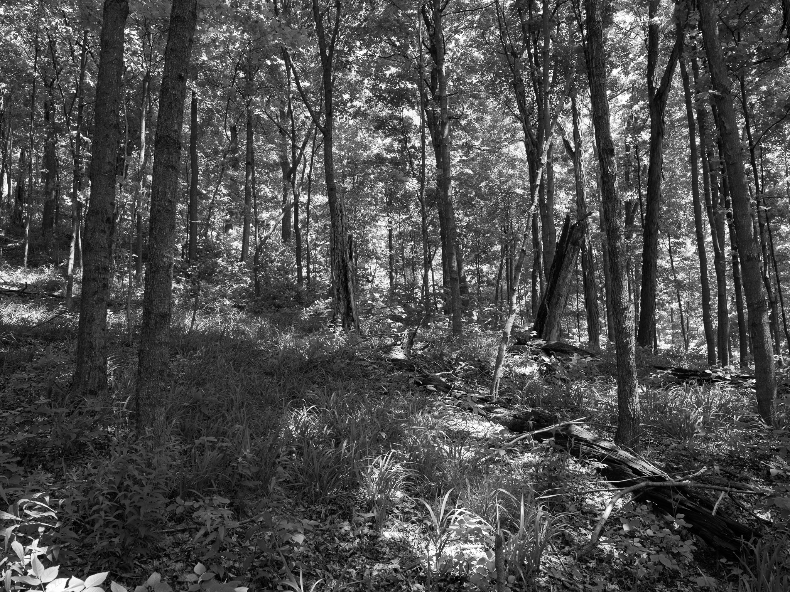
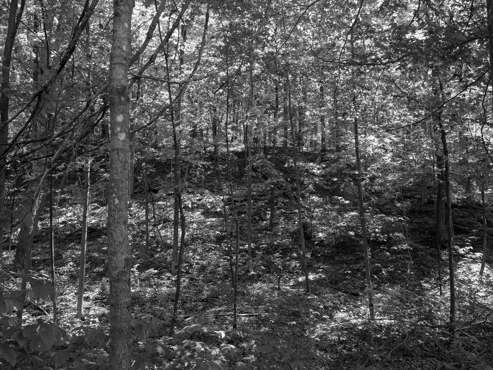
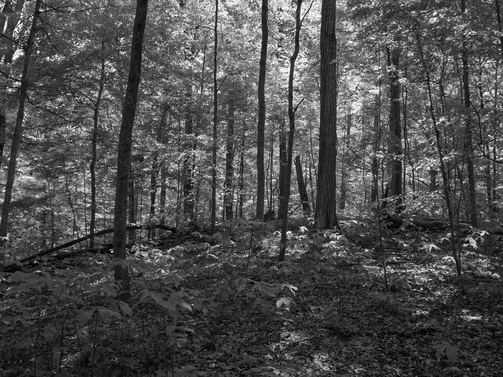
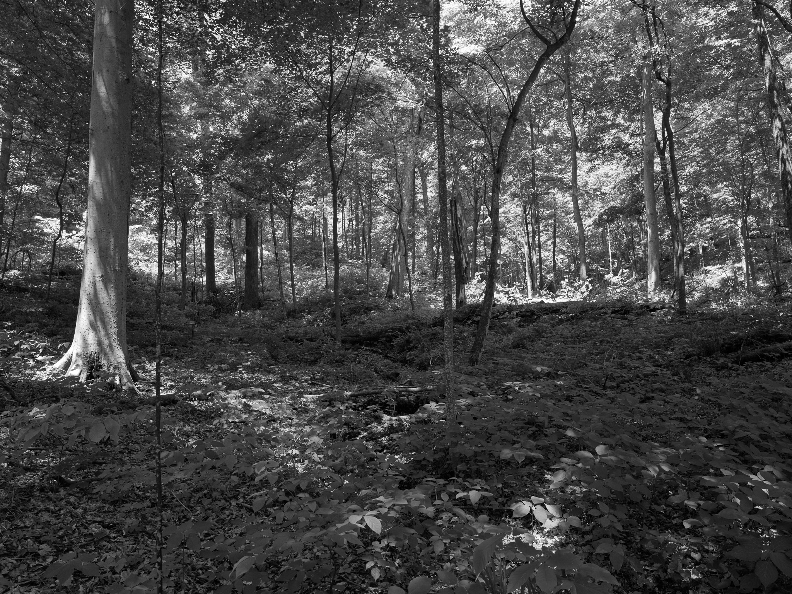
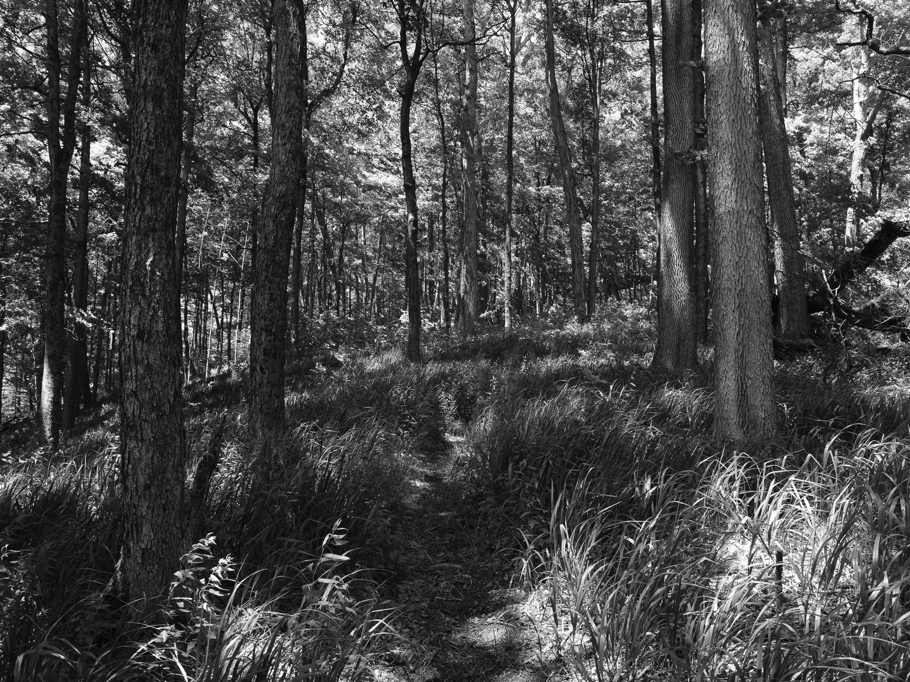

Public Lands Institute
Map
Archive
About
Fort Hill State Memorial
OH

Fort Hill State Memorial 1 · 2026-05-18
_DSF2221.jpg

Fort Hill State Memorial 2 · 2026-05-18
_DSF2222.jpg

Fort Hill State Memorial 3 · 2026-05-18
_DSF2224.jpg

Fort Hill State Memorial 4 · 2026-05-18
_DSF2230.jpg

Fort Hill State Memorial 5 · 2026-05-18
_DSF2234.jpg

Fort Hill State Memorial 6 · 2026-05-18
_DSF2236.jpg

Fort Hill State Memorial 7 · 2026-05-18
_DSF2244.jpg
View all 7 images →
← Shades State Park
Cuyahoga Valley National Park →